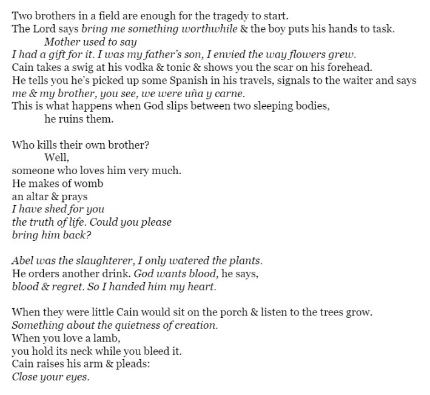

mai mai love: the white dancing princesses in the darkness / 1981
All female butoh troupe


The resurrection / pericle fazzini
"Christ rises from this crater torn open by a nuclear bomb; an atrocious explosion, a vortex of violence and energy."
Epic of Dust / Romeo Castellucci
I cannot find this ANYWHERE


cult sacrifice in tomahawk, kentucky
adding to tbr: Tongues of Deception


sokushinbutsu
yudonosan churenji temple


Yukio Mishima + Tadanori Yokoo

Mishi and one of his cats


Saddam Hussein's son... Just evil to the point of parody


My goddess The Black Widow


Lips of Thomas (1975)
Marina Abramović: My Dinner Date With Leonard Cohen
This is how I'd imagine a meeting between Buddha and Jesus.


Ray's Male Heterosexual Dance Hall


Death Erections

"I know that the proper thing to do, when you get to a village or
town, is to rush off to the churchyard, and enjoy the graves"
-Jerome K. Jerome

Anonymous Animal
Beautiful rumination on the internet. About the complicated and lonely presence we share on all these sites and pages and feeds and boards.
Raiders of the Lost Ark remix
Essentially a study on staging and shot composition and flow of
action and lighting. I think... this new score is Trent Reznor.
Sidenote: Up until embarrassingly recently I didn't realize the
Indiana Jones franchise was technically a period piece. And I used
to watch Crystal Skull all the time as a kid - old enough to
recognize the extremely clear 50s setting oops. As a kid all old
timey eras blend together I just thought the 80s looked like that.

The Mummies of Guanajuato
lmfao y he jackin it
Ray Bradbury on his visit :
"The experience so wounded and terrified me, I could hardly wait
to flee Mexico. I had nightmares about dying and having to
remain in the halls of the dead with those propped and wired
bodies."
The HOT Hairy Guys Top 100 (2013)
...need I say more
Raëlism
Whatever happened to UFO mania.
See Also: Raelian Playboy spread

Playboy
I happened to come across an archive of Playboy magazines (see above) spanning the first issue to 2020. Let me just say there's some quality work in them, both in terms of writing and tits. I'm obviously against the commodification/objectification of women but alas my baser instincts often win out. One thing I really love are the ads. One way to get an accurate snapshot of an era is by studying its marketing. Being a "gentlemen's magazine" of course there's tons of ads for cigarettes and booze. And they're all so - evocative, tasteful, witty. And yeah- they're effective. Would kill for a smoke right now.

Mack the Knife
What the hell... so while the Hays code banned kisses below the chin, radio was playing this. So comically gruesome it's sounds like a song from Chicago (2002).
L'Héautontimouroménos
I'll strike thee without enmity
nor wrath, like butchers at the block,
like Moses when he smote the rock!
I'll make those eyelids gush for me
with springs of suffering, whose flow
shall slake the desert of my thirst;
- a salt flood, where my lust accurst,
with Hope to plump her sail, shall go
as from the port a pitching barge,
and in my heart they satiate
thy sobs I love shall fulminate
loud as a drum that beats a charge!
for am I not a clashing chord
in all Thy heavenly symphony,
thanks to this vulture Irony
that shakes and bites me always, Lord?
she's in my voice, the screaming elf!
my poisoned blood came all from her!
I am the mirror sinister
in which the vixen sees herself!
I am the wound and I the knife!
I am the blow I give, and feel!
I am the broken limbs, the wheel,
the hangman and the strangled life!
I am my heart's own vampire, for
God has forsaken me, and men,
these lips can never smile again,
but laugh they must, and evermore!
- Lewis Piaget Shanks, Flowers of Evil (New York: Ives
Washburn, 1931)

Forum: Songs about cannibals/cannibalism
Personal fav cannibal song: Maneater - Blue Eyed Blondes.
Wedding Song - Peru
Tchakrulo - Georgian Choir
Lately I've been listening to Voyager's Golden Record for background sound. Totally unrepresentative of humanity as a whole though there's like 80% Mozart in tht bitch.
After Abel, Dante Emile

The Blues is an impulse to keep the painful details and episodes
of a brutal experience alive in one's aching consciousness, to
finger its jagged grain, and to transcend it, not by the
consolation of philosophy but by squeezing from it a
near-tragic, near-comic lyricism. As a form, the blues is an
autobiographical chronicle of personal catastrophe expressed
lyrically.
- Ralph Ellison
I think it was Thomas Shelby that said the blues are comical in
its sadness. An expression of pain so deep it has to seep into
humor.

Last photograph of an atlas lion 1925